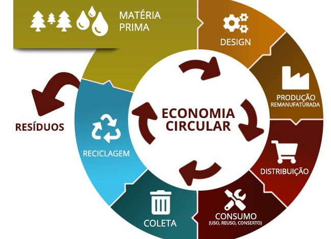

Olá, permita-me apresentar um pouco mais sobre mim.
Continuar lendo
Sou uma pessoa que encontra alegria e diversão em várias atividades da vida. Uma das minhas paixões está no mundo do entretenimento, especialmente no cinema e nas séries de TV. Não há nada como assistir a um bom filme ou mergulhar em uma série intrigante para relaxar e me entreter. Além disso, tenho um hobby que me proporciona um profundo senso de satisfação: o aquarismo. Criar e cuidar de aquários é uma atividade relaxante e fascinante. Adoro escolher peixes coloridos, decorar o ambiente subaquático e cuidar de suas necessidades. É uma maneira maravilhosa de apreciar a beleza da vida aquática no conforto da minha casa. Mas minha paixão não se limita apenas a isso. Viajar é outra parte importante da minha vida. Explorar novos lugares, culturas e experiências enriquece minha jornada. Cada viagem é uma oportunidade de aprender, crescer e criar memórias inesquecíveis. Em resumo, sou alguém que valoriza a diversidade das experiências e busca constantemente novas maneiras de aproveitar a vida ao máximo. Seja desfrutando de um filme emocionante, cuidando do meu aquário ou explorando destinos incríveis, a vida é uma aventura que estou ansioso para continuar explorando.
Certificado
Desvendando o 5G.
Assis. De RH.
Economia Circular.
Projeto
Criação de uma pagina pessoal como parte da nota da aula de FrontEnd.